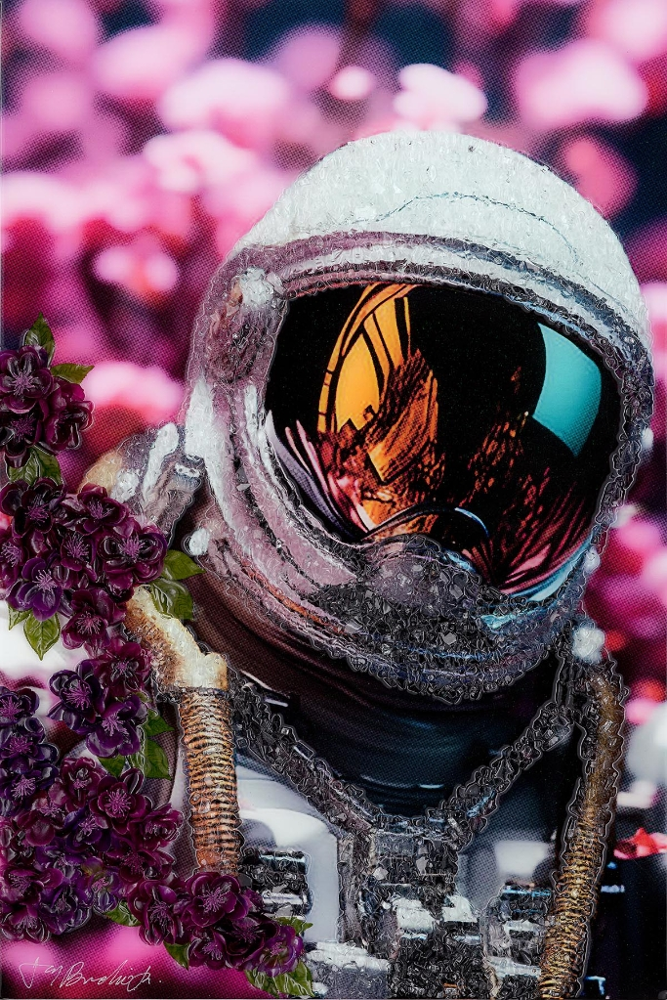

Astro Bloom-Purple Blossom

Description:
In “Astro Bloom / Purple Blossom,” Jay Bonadio fuses the boundlessness of space exploration with the delicate intricacy of nature. This vibrant mixed-media piece features a solitary astronaut, rendered in Bonadio’s signature crushed glass technique, which gives the space suit a crystallized, almost diamond-encrusted appearance.
The artwork creates a stunning narrative of life thriving in the void. A cascade of lush, deep purple blossoms wraps around the astronaut’s shoulder, softening the industrial lines of the suit and suggesting a harmony between technology and the organic world. The helmet’s visor is a focal point of intense mystery, reflecting a fiery, golden landscape—perhaps a Martian sunset or a distant nebula—which contrasts beautifully against the cool, shimmering white of the suit and the soft, magenta-hued bokeh background.
Bonadio’s use of resin and shattered glass serves to catch and refract light, making the astronaut appear to glow from within. This piece is more than just a portrait of a space traveler; it is a surrealist exploration of texture, color, and the human desire to carry life with us wherever we go.
Artwork Details:
- Medium: Mixed Media, Crushed Glass, and Resin on Board
- Style: Pop Surrealism / Space Art
- Key Elements: Reflective visor, purple floral motif, high-relief shattered glass texture
- Signature: Hand-signed by the artist (Bottom Left)
- Dimensions
- 36 in x 24 in
- Reg. / Lot No.
- 732773.0000